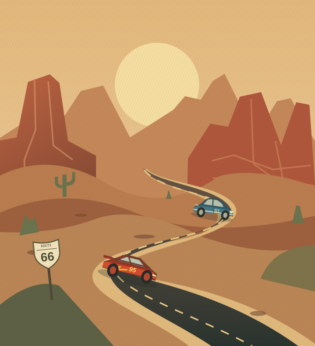

CARS / THE ORIGINALTHE SCENIC ROUTE / A LITTLE PERSPECTIVELESS EGO.
✓ VISITEDLESS EGO.
MORE ROAD.
For the know-it-all rookie and the old head holding on too tight. A detour through humility, connection, and learning to listen.